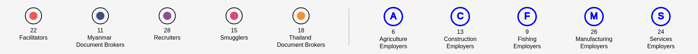
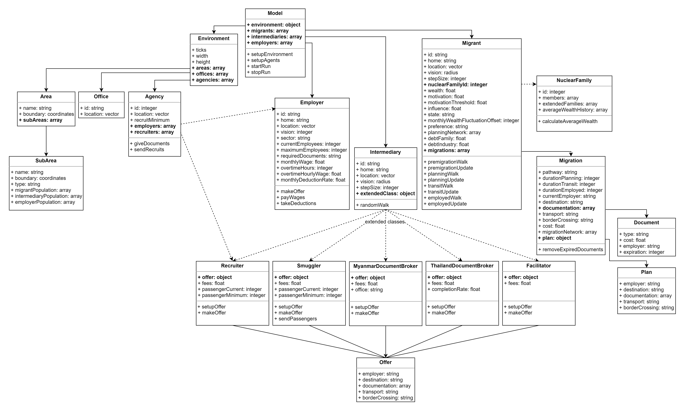

MyTh MaP-IN
Myanmar Thailand

A detailed account of the model, its underlying assumptions, design, and implementation, can be found in the MyTh MaP-IN model documentation, using the ODD+2D framework. This provides a description of the different components of the model, the processes through which they interact, and the decisions shaping agent behaviour. The UML diagram and schematic representation below offer additional ways of understanding the model, illustrating its structure and the relationships between its different components.
MyTh MaP-IN UML

MyTh MaP-IN SCHEMATIC